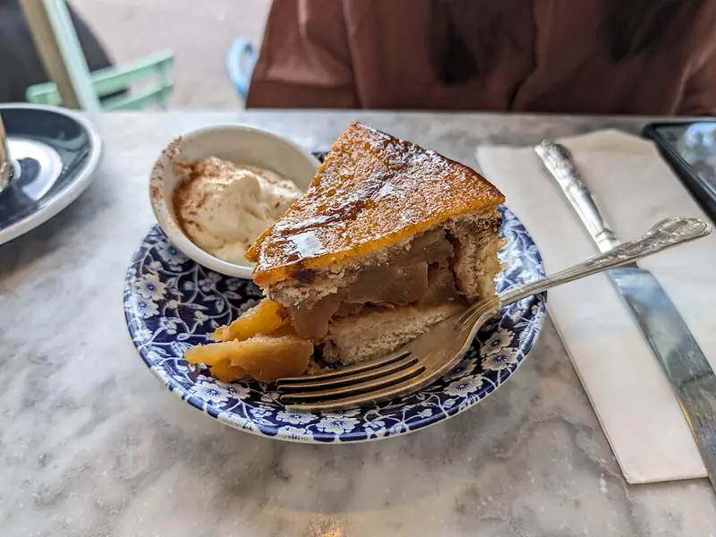

Фото: Andy Li, CC0

Шарлотка с яблоками
Классическая шарлотка из четырёх яиц с кислыми яблоками
60 мин8 порц.251 ккал на порциюБ 6 · Ж 5 · У 46Русская кухня
Продукты на 8 порц.
- Яйцо куриное4 шт
- Сахар1 стак.
- Мука пшеничная1 стак.
- Яблоки3 шт
- Сливочное масло10 г
- Ванильный сахар по желанию1 ч. л.
- Корица по желанию0,5 ч. л.
- Соль1 щеп.
Как готовить
- Разогрейте духовку до 180 °C (средний жар). Смажьте форму 22-24 см маслом и присыпьте мукой.
- Яблоки очистите от сердцевины и нарежьте дольками, посыпьте корицей.
- Взбейте яйца с сахаром, солью и ванильным сахаром миксером на высокой скорости 7-8 минут, пока масса не станет светлой и не увеличится в 3 раза.
- Просейте муку и аккуратно вмешайте лопаткой снизу вверх, чтобы масса не осела.
- Выложите яблоки в форму и залейте тестом.
- Выпекайте 40-45 минут. Первые 30 минут дверцу не открывайте. Шарлотка готова, когда верх золотистый, а деревянная шпажка выходит сухой.
- Остудите в форме 10 минут, затем выньте.
Совет. Пышность держится только на взбитых яйцах, поэтому взбивайте их дольше, чем кажется нужным. Кислые яблоки вроде антоновки дают лучший вкус.